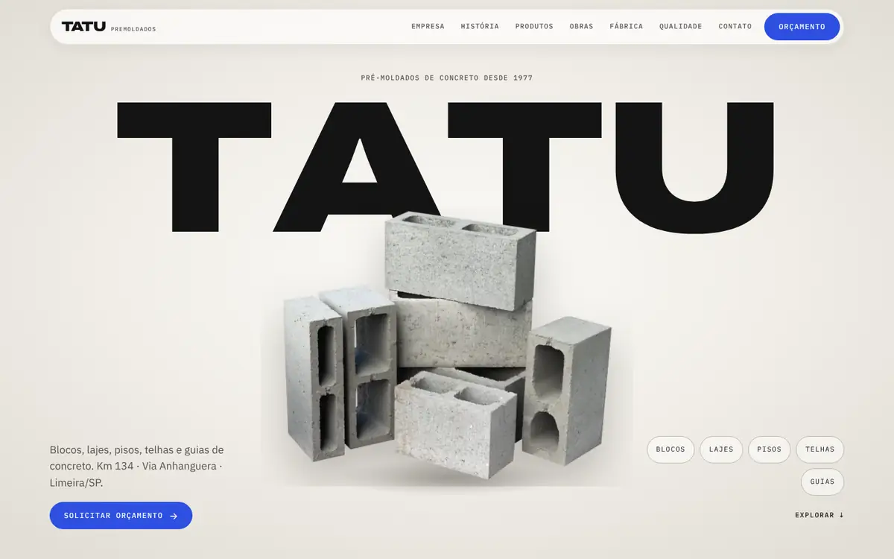
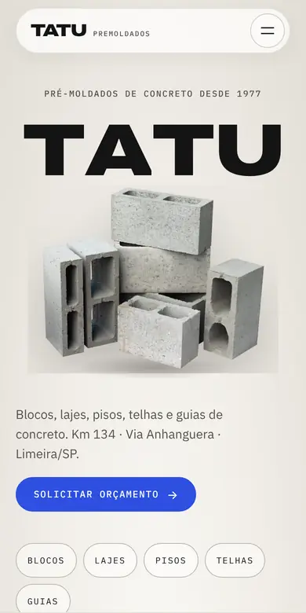

01 / 04
Tatu Pré-Moldados
Site institucional para uma fábrica de pré-moldados de concreto com quase 50 anos de história em Limeira/SP. Catálogo completo, história da empresa e pedido de orçamento, com animações guiadas pelo scroll.

